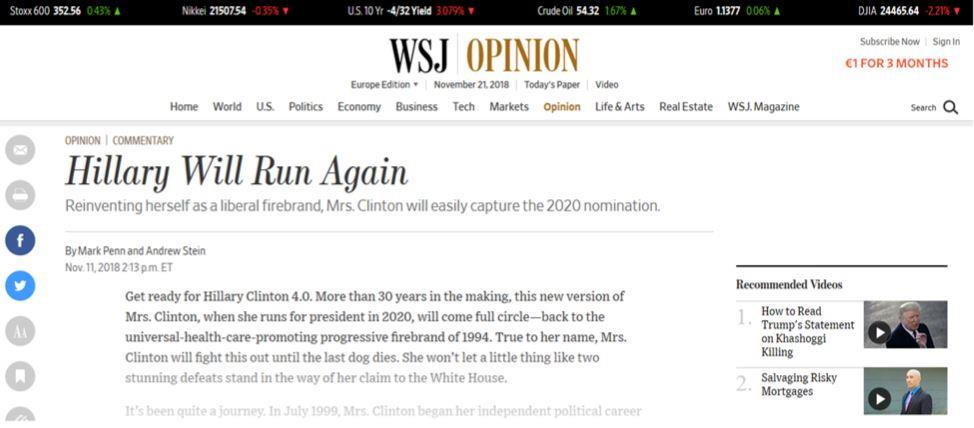
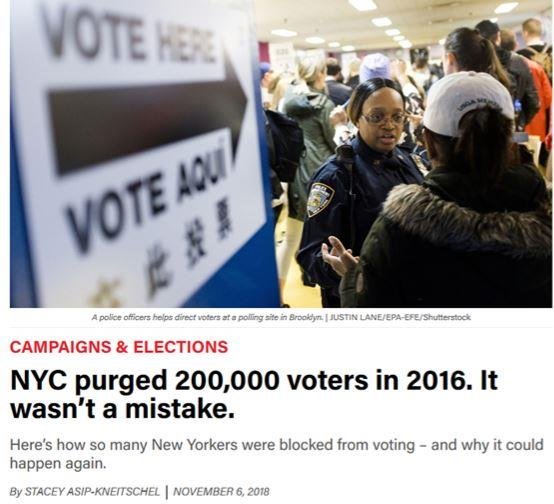
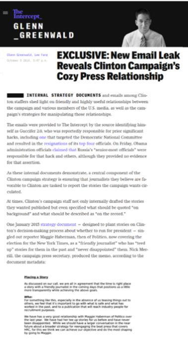
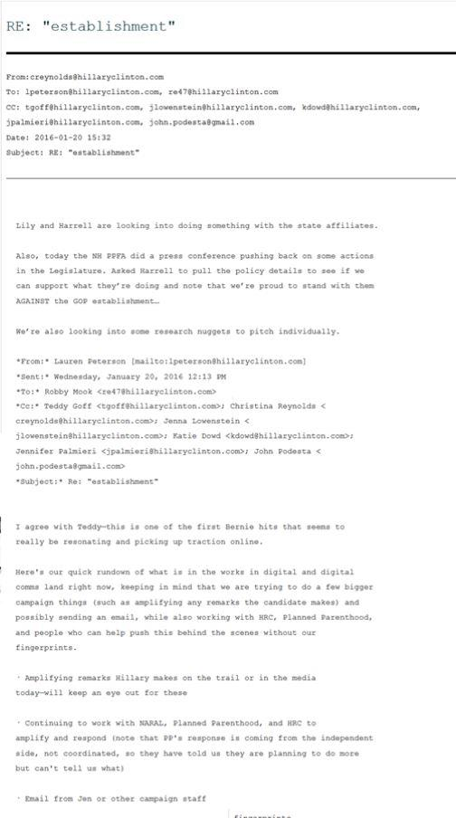
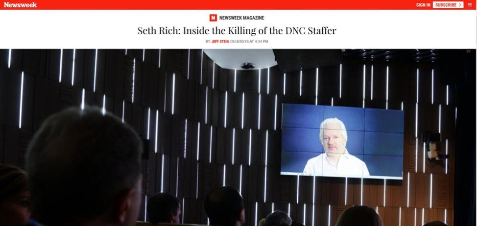

États-Unis : la présumée ingérence russe camoufle la fraude électorale des démocrates et la complicité des médias
par Julie LÉVESQUE
On apprenait récemment dans le Wall Street Journal que Hillary Clinton sera de la course à la présidence en 2020. Le titre du texte est sans équivoque : Hillary Will Run Again. « Tenez-vous prêts pour Hillary 4.0 », affirment les auteurs, convaincus qu’elle « remportera facilement l’investiture » du Parti démocrate. L’un d’eux, Mark Penn, était le principal stratège de la course à l’investiture de Hillary Clinton en 2008.
Sachant comment Hillary Clinton a « gagné » la course contre Bernie Sanders en 2016, on peut comprendre pourquoi elle pourra facilement se retrouver aux commandes du Parti démocrate en 2020. Peu de gens le savent cependant puisque les grands médias n’en ont que pour une présumée ingérence russe visant à frauder le peuple étasunien lors des présidentielles de 2016. La véritable fraude, à 100 % étasunienne, impliquant le Parti démocrate et les grands médias dits « libéraux », est demeurée bien loin des projecteurs.
Tout le monde « sait » que les Russes sont responsables de la défaite de Clinton et tout le monde ignore que la direction du Parti démocrate l’a mise frauduleusement à la tête du parti, violant ainsi sa propre charte lui imposant un devoir de neutralité lors des courses à l’investiture.
Peu de gens savent également qu’en octobre 2017, le Conseil électoral de New York (New York City Board of Elections) « a discrètement réglé une poursuite, admettant ainsi avoir enfreint les lois électorales fédérales et étatiques » en purgeant 200 000 votes, favorisant du coup Hillary Clinton aux dépens de Bernie Sanders, comme l’explique le média local City and State New York1.
Plusieurs autres problèmes concernant des infractions aux lois électorales, le manque de transparence et la sécurité du vote électronique ont été rapportés dans les médias indépendants, dont WhoWhatWhy2, qui offre une excellente couverture de ces questions.
RUSSIAGATE, UNE OPÉRATION DE CAMOUFLAGE ?
Le 12 juin 2016, Julian Assange annonce la publication prochaine de courriels incriminants sur Hillary Clinton3. Deux jours plus tard, les démocrates allèguent4 que des pirates informatiques appuyés par la Russie ont infiltré leurs ordinateurs.
Le 26 juillet suivant, Wikileaks publie des courriels du Democratic National Committee (DNC), l’instance dirigeante du Parti démocrate, prouvant que celle-ci favorisait clairement la candidate Hillary Clinton. L’enquête du FBI sur la présumée ingérence russe, surnommée « Russiagate », voit le jour le 31 juillet sous le nom de code « Crossfire Hurricane ».
Les démocrates sont depuis ce temps les tenants les plus féroces du discours sur cette présumée ingérence étrangère. Accuser la Russie d’avoir piraté leurs ordinateurs leur permet de détourner les regards de leur propre comportement frauduleux et de la complicité des grands médias lors des présidentielles de 2016.
L’ancien employé de la NSA et lanceur d’alerte William Binney affirme5 que « les déclarations voulant que la Russie ait piraté les ordinateurs du Parti démocrate, mis la main sur des données et transmis celles-ci à Wikileaks sont frauduleuses depuis le tout début ».
Binney est membre de Veteran Intelligence Professionals for Sanity (VIPS)6, un groupe d’anciens officiers du renseignement étasunien qui publie des notes depuis le discours mensonger de Colin Powell à l’ONU sur les armes de destruction massives en Irak. Le groupe dit ne pas avoir de programme politique, être voué à propager la vérité et à tenir responsables ses anciens collègues de la communauté du renseignement, laquelle est instrumentalisée par la classe politique.
VIPS a effectué des tests pour vérifier la véracité des déclarations concernant le piratage des ordinateurs des démocrates. Ils en sont venus à la conclusion que les courriels du parti 7 ont « clairement été obtenus grâce à un téléchargement local », et qu’un piratage à distance était « techniquement impossible ». Les métadonnées prouvent, disent-ils8, que « les données du DNC ont été téléchargées sur un dispositif de stockage dont la vitesse est largement supérieure à celle qu’offre internet lors d’un piratage à distance ». La copie des données aurait été effectuée sur la côte est des États-Unis, ajoutent-ils.
Notons que William Binney est celui qui a créé les programmes servant à surveiller le trafic sur internet, programmes jusqu’à ce jour employés par la NSA. Bien que les preuves scientifiques fournies par VIPS demeuraient incontestées9 le 13 juillet 2018, le procureur Mueller a tout de même accusé le renseignement russe ce jours-là d’avoir piraté le DNC. Les médias étasuniens, eux, perpétuent la thèse réfutée du piratage et ne remettent pas en question l’acte d’accusation.
Ce n’est pas un hasard s’ils ont ignoré ces conclusions et persisté à mettre de l’avant ce piratage qui n’a vraisemblablement jamais eu lieu pour en faire une saga interminable d’« interférence russe », laquelle a contaminé la presse occidentale au complet. Cette saga sert très efficacement de diversion et de camouflage.
Comme le rapportait Glenn Greenwald dans The Intercept10 en octobre 2016, les documents internes du Parti démocrate publiés par Wikileaks démontrent que « l’une des composantes au cœur de la stratégie de campagne de Clinton [consistait] à s’assurer que les journalistes qu’ils [croyaient] favorables à la candidate se chargent de rapporter les histoires que la campagne souhaitait faire circuler ».
Dans l’un de ces documents, l’attaché de presse de la campagne de Clinton affirme qu’« il est temps de placer une nouvelle (plant a story) à l’aide d’un journaliste avec qui l’on s’entend bien ». Il suggère d’y « aller avec quelque chose de sûr et qui a fonctionné par le passé ». Il nomme Maggie Haberman du site Politico, avec qui il affirme avoir « eu de bonnes relations au cours de la dernière année ». « Elle a écrit des nouvelles pour nous par le passé et nous n’avons jamais été déçus », ajoute-t-il.
Les courriels ont révélé que plusieurs blogueurs et chroniqueurs bien en vue11, incluant les chroniqueuses du Guardian Sady Doyle et Jessica Valenti, collaboraient avec le camp Clinton en publiant des textes favorisant Clinton et présentant Sanders sous un mauvais jour. Les stratèges de Clinton pouvaient ainsi propager leurs points de vue « sans laisser leurs empreintes ».
Au moment où la course pour New York se resserrait et que Sanders avait des chances réelles de l’emporter, les grands médias offraient un portrait de la course très peu fidèle à la réalité. En avril 2016, au moment où Sanders attirait une foule monstre de 27 000 personnes12 au Washington Square, Clinton réunissait à peine 1300 sympathisants dans un centre communautaire du Bronx. Business Insider publiait le soir même un texte d’Associated Press avec le titre suivant : Clinton et Sanders organisent des rassemblements immenses le même soir13.
Difficile d’interpréter les chiffres de manière plus créative.
L’étendue de cette collusion entre les grands médias et le camp Clinton révélée par Wikileaks est remarquable14 et comprend plusieurs médias dits « libéraux » comme CNN, MSNBC, le New York Times, Times et CNBC. CNN a entre autres omis de dévoiler que plusieurs de ses commentateurs invités avaient des liens financiers avec les Clinton. Le réseau a également fait parvenir à l’avance au personnel de la campagne de Clinton des questions d’un débat télévisé lors des primaires et leur a également demandé de soumettre des questions15 à poser au candidat républicain Ted Cruz pour une entrevue.
Le 24 juillet 2016, deux jours après la publication des courriels incriminants par Wikileaks, l’animatrice Joy Reid de MSNBC évoquait sur Twitter une affinité entre Wikileaks, Trump et la Russie. « Vous insistez sur une théorie de conspiration discréditée. Il n’y a aucune affinité que ce soit. Nos avocats surveilleront votre émission, » a répondu Wikileaks16.
Le même jour, la présidente du Parti démocrate, Debbie Wasserman Schultz, démissionnait en raison des dommages causés par les courriels de Wikileaks. Elle a été remplacée par la journaliste Donna Brazile de CNN, laquelle avait remis les questions de débat au camp Clinton.
Ce genre d’histoire ne s’invente pas.
Brazile a plus tard admis que le Parti démocrate avait truqué la course à l’investiture en faveur de Clinton et que le camp de Clinton avait pris le contrôle du parti, ce qui est contraire à sa charte.
À la lumière de ce qui précède, il est évident que si l’on parle sans cesse du « Russiagate », c’est entre autres pour créer diversion et éviter que la véritable fraude électorale de 2016 ne soit exposée au grand jour, fraude à laquelle des partisans de Bernie Sanders s’attaquent depuis des mois, ce que les médias ignorent totalement, pour faire changement.
LE PARTI DÉMOCRATE POURSUIVI EN JUSTICE POUR FRAUDE ÉLECTORALE
Une demande de recours collectif contre le Parti démocrate et Debbie Wasserman Schultz, présidente du parti à l’époque, a été déposée devant un juge de la Floride le 28 juin 2016. Les plaignants sont des partisans de Bernie Sanders ayant contribué financièrement à sa campagne présidentielle. La poursuite comporte 6 chefs d’accusation : fraude, déclarations inexactes faites avec négligence, violation du code du District de Columbia, enrichissement sans cause, manquement à une obligation fiduciaire et négligence.
On peut y lire :
« French translation. Le DNC a consacré ses ressources considérables afin d’appuyer Hillary Clinton plus que tous les autres candidats démocrates. En déclarant publiquement sa neutralité et son impartialité, le DNC a activement caché son parti pris à ses propres donateurs ainsi qu’aux donateurs des campagnes des rivaux de Clinton, y compris Bernie Sanders. »
Dans une sombre tournure des événements, le 13 juin 2017, le couple d’avocats en charge du recours collectif a demandé à la cour de protéger les plaignants, leurs familles et leurs conseillers juridiques en invoquant trois décès.
Shawn Lucas, l’huissier qui a remis l’avis de poursuite aux démocrates en juin 2016 et devait témoigner en cour, a été retrouvé mort le 2 août suivant. Il serait accidentellement décédé17 d’une combinaison d’effets nocifs de fentanyl, de cyclobenzaprine et de mitragynine.
Un autre témoin potentiel dans cette poursuite, Seth Rich, un employé du Parti démocrate soupçonné par plusieurs d’être à l’origine de la fuite – et non du piratage – de courriels du Parti démocrate, est mort le 10 juillet 2016 dans des circonstances qui demeurent nébuleuses18. Wikileaks a offert 20 000 dollars de récompense pour toute information pouvant mener à une condamnation dans cette affaire. Cette offre de récompense et les propos tenus par Assange sur la mort de Seth Rich ont renforcé les suspicions à l’effet que ce dernier était une source de Wikileaks.
Beranton J. Whisenant Jr., un avocat impliqué dans la poursuite, a lui aussi été retrouvé mort le 25 mai 201719 d’une balle dans la tête. Il se serait suicidé en raison de troubles matrimoniaux.
Il est évident que le scandale de la présumée interférence russe, pour laquelle il n’existe toujours aucune preuve tangible, a été et demeure très utile aux démocrates, les véritables fraudeurs de l’élection présidentielle de 2016. Ils ont purgé des votes, menti au public et fraudé leurs donateurs.
Et les grands médias qui ont conspiré avec le camp Clinton afin de discréditer Bernie Sanders et de favoriser la candidate mal aimée sont complices de cette fraude électorale.
Il est là, le véritable scandale, preuves à l’appui.
Et personne n’en parle.
J.L.
Julie Lévesque est journaliste indépendante et professeure d’anglais en Chine. Elle a travaillé plusieurs années pour le Centre de recherche sur la mondialisation, un média indépendant axé sur la géopolitique. Vous pouvez lire ses textes sur Mondialisation.ca, Global Research et son blogue Le Tribunal de l’infaux.
Partager cette page